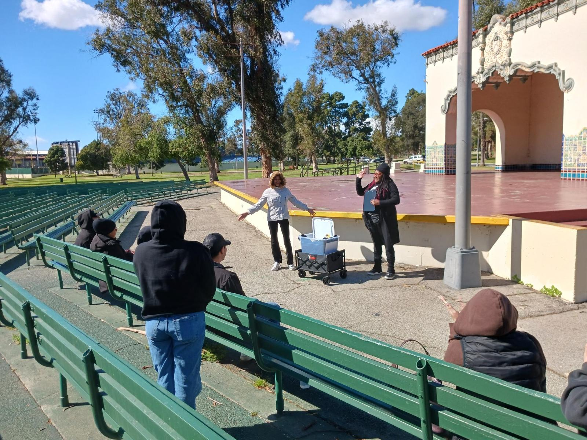
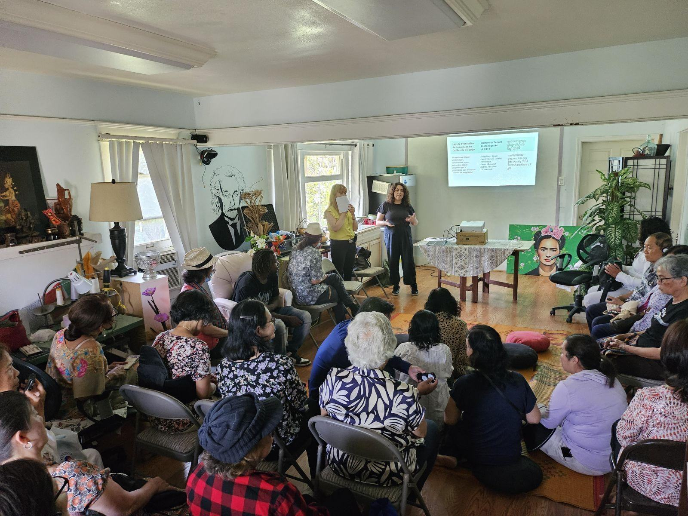

Tenant resources
You deserve safe and stable housing.
Find a workshop, talk with an organizer, or look up answers to the questions tenants ask us most.
Need housing support?
Two ways to start.

Want to learn about your tenant rights?
Join an upcoming Know Your Rights workshop and learn about local protections and resources available to you.
Find a workshop →
Facing an eviction?
Connect with one of our community organizers for support, information about your rights, and guidance on next steps. (opens in a new tab)
Connect with us →Frequently asked questions
Know your rights.
This information is general guidance, not legal advice. Select a question to read the answer.
What do I do if I just received an eviction notice?
When you receive a court eviction notice (Unlawful Detainer), keep in mind that the eviction process lasts 6–8 weeks or longer. Take a breath and do not move out prematurely. Instead:
- Request free legal support at stayhousedla.org (opens in a new tab).
- File an Answer at your nearest court Self Help Center (opens in a new tab) or using the Tenant Empowerment Toolkit (opens in a new tab) if you’re pressed for time.
You must file an Answer to the lawsuit within 10 court days of receiving it. If you do not file an answer, the opposing party will automatically win. This is called a default judgment. When you file your Answer, it is advisable to request a jury trial and fill out a fee waiver form.
Reach out to our team for support by submitting an intake form (opens in a new tab), and attend our next Know Your Rights workshop for your best opportunity to connect with an attorney and receive guiding information.
Please note: LiBRE does not provide legal representation, but our team can help you connect with a free attorney through the Stay Housed LA program. While legal representation is not guaranteed, we recommend that anyone going through a court eviction apply through the Stay Housed LA website and attend a Know Your Rights workshop for the best chance at receiving legal support.
How can I prepare for my eviction lawsuit if I don’t have an attorney?
If you did not qualify for legal assistance through Stay Housed LA, don’t lose hope! There are resources available to help you prepare to represent yourself in an eviction case.
Visit stayhousedla.org/self-help-eviction-defense (opens in a new tab) for a full list of videos, webinars, and workshops to help guide you through the process. You can also attend our next Know Your Rights workshop for an opportunity to speak with a lawyer during our Attorney Q&A session or in a private Counsel and Advice appointment.
What do I do if my landlord locked me out of my home?
Anti-harassment and tenant protection laws prohibit landlords from locking tenants out of their homes without going through court eviction proceedings. Only the Sheriff's department can lock a tenant out, and only when the tenant has lost an eviction court case.
If you have been illegally locked out, you can visit the police department with proof of your tenancy and a copy of this pamphlet (opens in a new tab) and request that they assist you in regaining access to your unit.
I received a 3/30/60-day notice. Do I have to move out when the notice says?
Not necessarily. A written eviction notice from your landlord is only the start of a lengthy eviction process. You likely have more time than what is stated on your notice, even if you don’t want to go to court.
You can talk with your landlord to see if they’re willing to extend the time, resolve the listed issue, or stop the eviction process altogether. In the case of a 3-day notice, you have the chance to resolve the issue before your landlord can take further action. If you follow what the notice states or negotiate with your landlord, you can avoid an eviction case.
Make sure you get any agreements you make with your landlord in writing, document any phone or in-person conversations, and reach out to our team for support by submitting an intake form (opens in a new tab).
My landlord verbally told me / texted me / emailed me an eviction notice. Do I have to move out?
No. All landlords must follow the legal eviction process, which starts with a printed paper notice either served to you in person or posted on your door. Notice by any other means is invalid and likely to not hold up in court if your landlord tries to pursue a legal eviction.
If you receive an invalid eviction message, you can use this letter template (opens in a new tab) to inform your landlord of their legal obligations.
Can I get evicted because they’re repairing my unit?
You can only be evicted for repairs if your unit is undergoing a “substantial remodel”. This means your landlord is replacing a major system, using dangerous materials, and/or the work will make your unit unsafe to live in for over 30 days.
In Long Beach, most landlords are required to include relevant permits and provide relocation assistance for substantial remodel evictions. Learn more about Long Beach substantial remodel protections (opens in a new tab).
If you feel that the repairs listed on your eviction notice do not meet substantial remodel requirements, join us at our next Know Your Rights workshop or reach out to our team by submitting an intake form (opens in a new tab).
My landlord sold the building. Do I have to leave?
Not necessarily. Your lease agreement is tied to the property address and unit number, not the landlord holding the property. New landlords must honor the lease agreement in place and continue your tenancy under the same terms you set with your previous landlord.
A new landlord can only file for eviction under the same just cause reasons that apply to your tenancy.
Do I have to sign a new lease agreement with a new landlord or property management company?
Tenants cannot be required to sign a new lease which is substantially different from their existing lease. Any changes made to your lease have to come with sufficient notice, typically at least 30 days.
If your landlord is pressuring you to sign a new lease that is significantly different, this could constitute harassment.
What can I do if my landlord is refusing to make repairs?
You can report habitability issues to the LA County Department of Public Health at (888) 700-9995 or ehservices.publichealth.lacounty.gov (opens in a new tab).
You can also contact Long Beach Code Enforcement at (562) 570-2633 or lbcode.org (opens in a new tab). Your landlord will receive communication from these departments and know that someone filed a complaint.
How do I know if my rent increase was legal?
The statewide rent cap is currently 8%, but may be different depending on where you live and what type of housing you live in. Tenants living in their unit for over a 12-month period can’t receive more than 2 rent increases a year, and the total rent increases can’t exceed the total rent cap.
You can check yours with the tenantprotections.org calculator (opens in a new tab). Our Tenant Protections map also shows which Long Beach homes the state rent cap likely covers.
How can I connect with a Know Your Rights workshop?
You can find the full schedule of our upcoming workshops on the Workshops page.
Resources directory
Help beyond housing.
We aim to connect tenants with resources outside the scope of the services our organization offers.
Get involved
We are stronger when we act together.
Whether you are facing housing challenges or ready to support the movement, there is a place for you.
Volunteer with us
Connect with neighbors, support community events, and build leadership — all while making a real impact.
Sign up to volunteer (opens in a new tab)Support the fight
Be a part of the milestones in the housing advocacy movement and help ensure housing rights for everyone who calls Long Beach home.
Contact us to giveGet the newsletter
Updates on our campaigns, upcoming events, and ways to take action in your community.
Join the list (opens in a new tab)